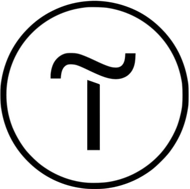

Мой набор инструментов
HTML 5
Структура и содержимое
HTML5 является основой моей работы, как и впринципе всего сайта. Я использую его для структурирования страницы и контента, делая это семантически правильно . Он формирует основу, на которой строятся визуальные элементы сайта.
CSS 3
Визуальные стили
CSS3 - это главный инструмент в области стилизации и верстки сайта. Он играет важнейшую роль в создании визуально привлекательных веб-сайтов, управляя всем, от шрифтов и цветов до адаптивного дизайна, который подстраивается под различные устройства.
JavaScript
Взаимодействие с сайтом
JS - язык программирования на котором строится всё взаимодействие на сайтах. Объектно-ориентированное программирование является основным методом разработки. От этого языка зависит работа всех кнопок на сайте.
jQuery
Дополнительные библиотеки
jQuery - это библиотека для языка программирования JavaScript, набор инструментов для веб-разработки. Основная цель jQuery — упростить написание скриптов на языке JavaScript. Она была создана для облегчения работы с элементами документа HTML (DOM), обработки событий, анимации и AJAX.

Tilda
Конструкторная разработка
Tilda - блочный конструктор сайтов, не требующий навыков программирования. Позволяет создавать сайты, интернет-магазины, посадочные страницы, блоги и email-рассылки.
Wordpress
CMS разработка
Wordpress - это комплексная система управления контентом и электронной коммерцией. Это набор инструментов и модулей, позволяющих создавать, администрировать и продвигать сайты различной направленности.
Git
Контроль версий
Git - это система контроля версий, которая помогает отслеживать историю изменений в файлах, чтобы в случае неполадки откатиться к старой версии. Данный инустрмент обеспечивает более удобную работу с проектом, позволяя контролировать вносимые изменения, а также удалённо создавать новые папки и резервные копии.